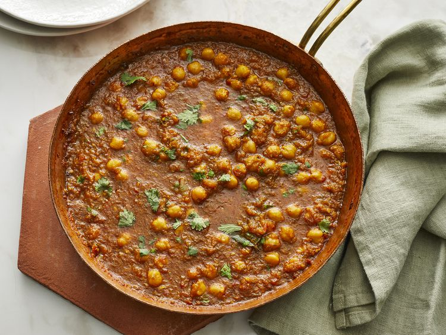

Give this chana masala dish a try and don't look back! This Indian chickpea curry features a hearty mixture of chickpeas, tomatoes, onion, green chili, and warm Indian spices. Both carnivores and vegetarians will enjoy this meal. My kids love it. Serve over basmati or jasmine rice and enjoy. Namaste y'all!
Ingredients
- 1 onion, chopped
- 1 tomato, chopped
- 1 (1-inch) piece fresh ginger, peeled and chopped
- 4 cloves garlic, chopped, or more to taste
- 1 green chile pepper, seeded and chopped (Optional)
- 3 tablespoons olive oil
- 2 fresh bay leaves
- 1 teaspoon chili powder
- 1 teaspoon coriander powder
- 1 teaspoon garam masala
- ½ teaspoon turmeric powder
- 1 pinch salt to taste
- water, as needed
- 1 (15 ounce) can chickpeas
- 1 teaspoon fresh cilantro leaves, for garnish, or more to taste
Preparation Steps
- Step 1 : Grind onion, tomato, ginger, garlic, and chile pepper together in a food processor into a paste.
- Step 2 : Heat olive oil in a large skillet over medium heat. Fry bay leaves in hot oil until fragrant, about 30 seconds. Pour the paste into the skillet and cook until the oil begins to separate from the mixture and is golden brown in color, 2 to 3 minutes. Season the mixture with chili powder, coriander, gram masala, turmeric, and salt; cook and stir until very hot, 2 to 3 minutes.
- Step 3 : Stir just enough water into the mixture to get a thick sauce; bring to a boil and stir chickpeas into the sauce. Reduce heat to medium and cook until the chickpeas are heated through, 5 to 7 minutes. Garnish with cilantro.
- Step 4 : Stir in lentils, and add water and tomatoes. Bring to a boil. Reduce heat and let simmer until lentils are tender, about 40 minutes.
- Step 5 : When ready to serve, stir in spinach and cook until it wilts.
- Step 6 : Stir in vinegar and season with salt and pepper; taste and adjust as needed.
- Step 7 : Serve hot and enjoy!